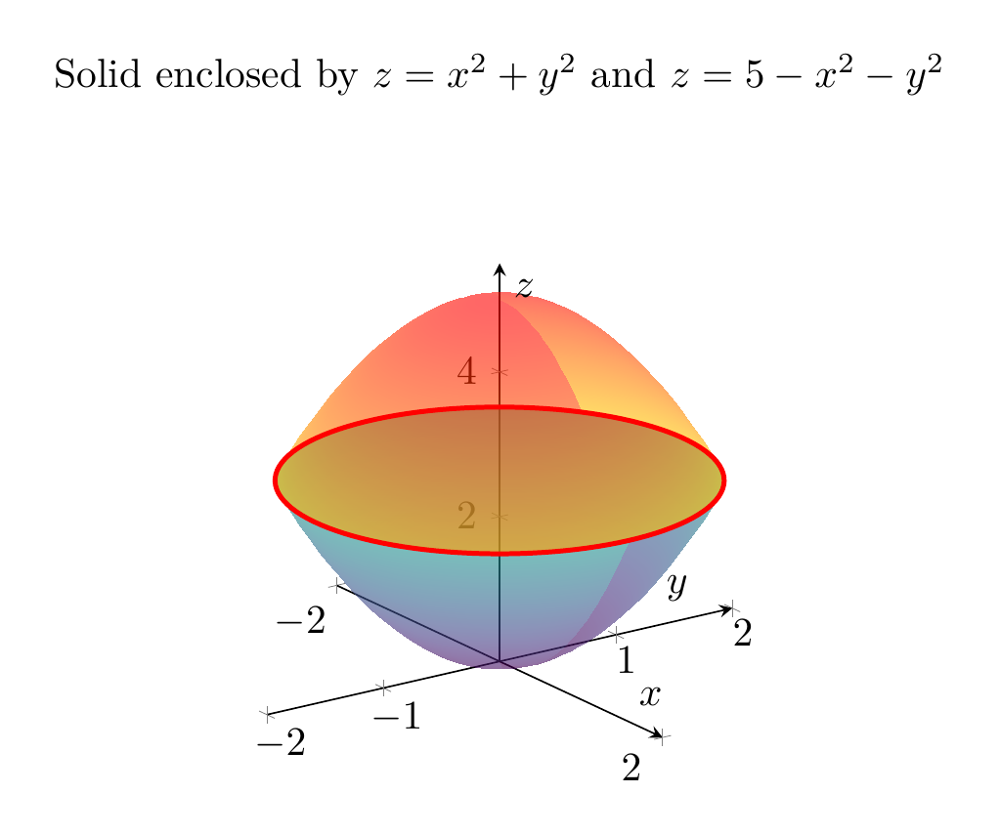

Please solve the problem in the following image.
(Image `20260928_150507_141450_utc_0800_0.png`. Alt text: Image: human_20260928_150507_141450_utc_0800)
20260928_150507_141450_utc_0800_0.png
End of problem
Answer
## Problem
Draw the solid enclosed by the paraboloids
$$z=x^2+y^2 \qquad\text{and}\qquad z=5-x^2-y^2.$$
**Key idea.** In cylindrical coordinates $(r,\theta,z)$, with $x=r\cos\theta$, $y=r\sin\theta$, the surfaces become
$$z=r^2 \quad\text{(upward-opening paraboloid)}$$
and
$$z=5-r^2 \quad\text{(downward-opening paraboloid)}.$$
The solid is the region between these two surfaces.
---
### 1. Intersection of the two surfaces
Set the right-hand sides equal:
$$r^2=5-r^2 \implies 2r^2=5 \implies r=\sqrt{\frac52}.$$
Thus the two paraboloids meet on the circle
$$x^2+y^2=\frac52,\qquad z=\frac52.$$
This circle is the "equator" of the solid.
---
### 2. Which surface is the top and which is the bottom?
For $0\le r\le \sqrt{5/2}$,
$$5-r^2-r^2=5-2r^2\ge 0,$$
so
$$r^2\le 5-r^2.$$
Hence the solid is
$$r^2\le z\le 5-r^2,\qquad 0\le r\le \sqrt{5/2}.$$
It is a lens-shaped solid that is widest at $z=5/2$.
---
### 3. 3D rendering
A graphing device draws both paraboloids over the disk $r\le\sqrt{5/2}$ and highlights their intersection circle (red). The solid is the region trapped between the two sheets.
---
\documentclass[border=10pt]{standalone}
\usepackage{pgfplots}
\pgfplotsset{compat=1.18}
\usepgfplotslibrary{colormaps}
\begin{document}
\begin{tikzpicture}
\begin{axis}[
view={55}{25},
axis lines=center,
xlabel=$x$, ylabel=$y$, zlabel=$z$,
xmin=-2, xmax=2, ymin=-2, ymax=2, zmin=0, zmax=5.5,
title={Solid enclosed by $z=x^2+y^2$ and $z=5-x^2-y^2$},
grid=major,
]
% lower paraboloid z = x^2+y^2 over disk r<=sqrt(5/2)
\addplot3[
surf, shader=interp,
colormap/viridis,
domain=0:1.58113883, y domain=0:360,
samples=25, samples y=50,
opacity=0.6,
trig format plots=deg,
point meta=z,
]
({x*cos(y)}, {x*sin(y)}, {x^2});
% upper paraboloid z = 5 - x^2 - y^2 over same disk
\addplot3[
surf, shader=interp,
colormap/hot,
domain=0:1.58113883, y domain=0:360,
samples=25, samples y=50,
opacity=0.6,
trig format plots=deg,
point meta=z,
]
({x*cos(y)}, {x*sin(y)}, {5-x^2});
% intersection circle
\addplot3[
no markers, red, very thick,
domain=0:360, samples=120, samples y=0,
trig format plots=deg,
]
({1.58113883*cos(x)}, {1.58113883*sin(x)}, {2.5});
\end{axis}
\end{tikzpicture}
\end{document}

pgfplots_0.png
---
### 4. 2D cross-section
A useful check is the radial–vertical cross-section. In the $rz$-plane the region becomes
$$r^2\le z\le 5-r^2,\qquad 0\le r\le \sqrt{\frac52}.$$
Rotating this shaded profile about the $z$-axis gives the solid.
---